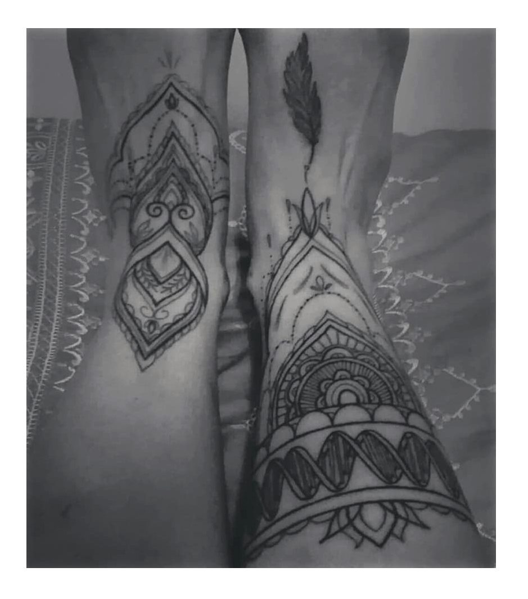

Hi everyone!
I am Sandra Álvarez-Carretero, a computational biologist working as a post-doctoral researcher at Ziheng Yang Lab at University College London.
Even though now I cannot imagine a day working without my laptop, my career started at the wet lab and, little by little, I specialised in computer science.
You can learn more about my research in academia in the following links:
If you have any questions or would like to start a research collaboration, please contact me.